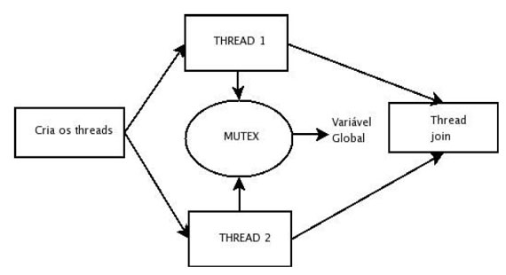
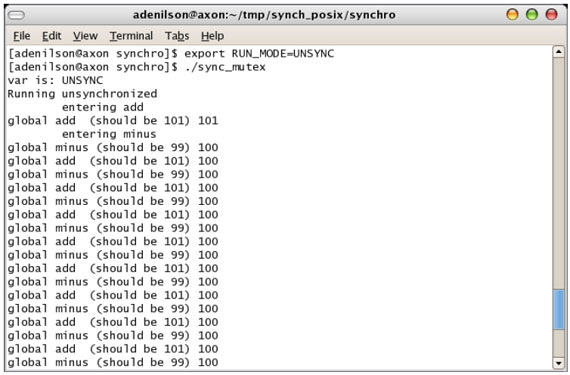
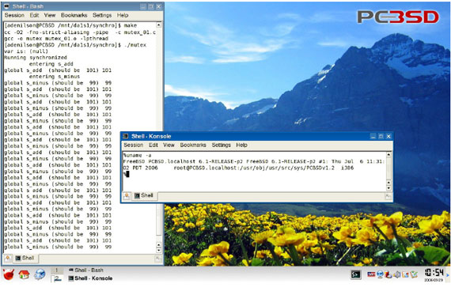
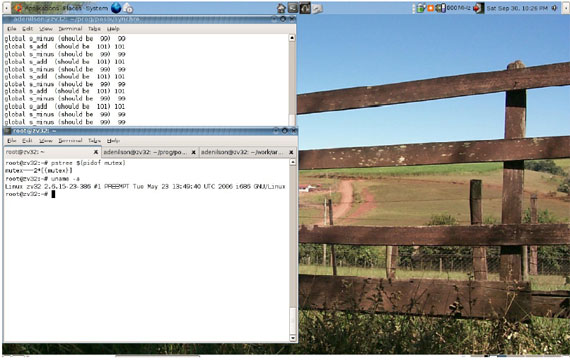
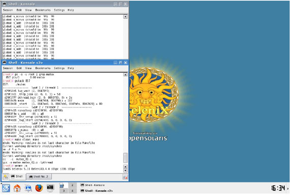

Este artigo discute alguns conceitos de S.O. multithreads, a API POSIX
para criação e sincronização de threads e finalmente traz um programa
rodando em 3 plataformas diferentes (Linux, FreeBSD e OpenSolaris).
Para facilitar a compreensão dos conceitos, apresentamos alguns
exemplos que possuem ordem crescente de complexidade. Seguem anexos os
códigos fonte destes exemplos para estudo e experimentação do leitor.
Esperamos que você ao final do artigo seja capaz de criar programas
multithreads em linguagem C portáveis entre plataformas POSIX. Siga em
frente, coloque a mão na massa/código, pois programação somente se
aprende praticando.
O nível de dificuldade do material exposto é intermediário (aqueles que
já cursaram as disciplinas de computação: Sistemas operacionais e
Programação em Linguagem C terão maior facilidade em compreender a
exposição). Ainda assim, fizemos um esforço grande para explicar os
conceitos apresentados, provendo explicações e definições quando
possível.
Se você não conhece ainda a diferença entre processo x thread, sugerimos uma leitura prévia do artigo de programação Multithread em Windows de nossa autoria. Boa leitura!
Sistemas operacionais multitarefa se caracterizam por serem capazes de
rodar múltiplos processos ou programas em paralelo (podendo ou não
serem de usuários diferentes) e sua origem remonta aos anos 70. Ao
final dos anos 80, este conceito foi extendido para dentro do processo,
permitindo a existência de múltiplos caminhos de execução dentro de um
mesmo programa. Os primeiros sistemas operacionais a implementar esta
característica eram baseados em microkernel (Tanenbaum & Woodhull,
1997), embora em caráter experimental. Até 1991, nenhum sistema
operacional comercial possuia uma API em user level para criação e uso
de múltiplos threads (Lewis & Berg, 1996), e em somente 4 anos (ou
seja, a partir de 1996) os principais S.O. comerciais passaram a
suportar múltiplos threads dentro de um processo.
Para permitir a execução de um novo processo/thread, o S.O. deve ser
capaz de guardar o estado do thread/processo que estava em execução. O
suporte a threads exige que estruturas adicionais sejam adicionadas a
estrutura que contêm o processo (contador do programa, registradores,
estado da pilha, etc) (Tanenbaum & Woodhull, 1997). A maneira como
é realizada esta implementação é dependente do S.O., podendo haver
maior ou menor compartilhamento de recursos.
O uso de programação multithread permite a implementação de programação
concorrente e em sistemas com múltiplos processadores (e/ou cores)
paralelismo real (Love, 2005). O conceito de thread pode ser
implementado em user level e kernel level. Operacões em user level são
mais baratas, porém se um thread está em uma operação bloqueante (e.x.
fazendo I/O), todos os threads do processo param. Por outro lado,
chamadas ao kernel são caras, porém se o kernel tem conhecimento dos
threads, na situação anterior pode passar o foco de execução para o
outro thread do mesmo processo (Tanenbaum & Woodhull, 1997). A JVM
(Java Virtual Machine) pode prover threads in user level quando o S.O.
não possui esta funcionalidade.
Existem domínios de problema que podem se beneficiar do uso de
programação multithread (e.x. processamento de imagens, I/O assíncrono,
bancos de dados, etc) e outros onde são discutíveis as vantagens desta
técnica (e.x. cálculos seriais).
A principal vantagem do uso de múltiplos threads em relação ao fork de
um processo advém da facilidade de comunicação e compartilhamento de
dados entres os threads, dado que ambos existem no mesmo espaco de
endereco de um único processo e compartilham variáveis globais (Stevens
& Rago, 2005). A comunicação entre processos por uso de sinais é
limitada e mecanismos de IPC (Inter Process Comunication) apesar de
variados (pipes, Shared Memory, etc) impõem uma complexidade por vezes
desnecessária na programação. Além disso, em alguns S.O. pode ser mais
eficiente criar um novo thread do que um novo processo, além de em
algumas implementacões ser mais barato a mudanca de contexto de
execução de um thread para outro, se comparado a mudanca de contexto
entre processos (Matthew & Stones, 2004).
Entretanto, o uso de threads também impõem algumas dificuldades tais
como a necessidade de funcões reentrantes e o fato de que um thread
pode quebrar toda a aplicacação por co-existirem em espaco de endereco
comum de um único processo. Condicões de corrida podem aparecer,
gerando código que funciona na maioria das vezes, porém falha
miseravelmente em certas condicões. A debugação de um programa com
múltiplos caminhos de execução é uma ordem de magnitude mais complexa
se comparada a um programa convencional e finalmente, não havendo
múltiplos processadores/cores pode haver até uma diminuição no tempo de
execução do programa ao usar mais threads. O próprio venerável Alan Cox
fez certa vez a citação "Programação multithread é a melhor maneira de
se dar tiro em ambos os pés de uma só vez!" (Matthew & Stones,
2004).
Programação multitthread é um recurso valioso, quando nas mãos de um bom programador e utilizada em um contexto apropriado.
O padrão POSIX (Portable Operating System Interface) foi criado pela
IEEE ((Institute of Electrical and Electronics Engineers) tendo sua
primeira versão publicada oficialmente em 1990 e sofrendo subsequentes
adicões e revisões em 1993 (extensões tempo real), 1996 (programação
multithread),1999 (mais interfaces de tempo real), 2000 (event tracing)
e finalmente em 2001 (adicionando entre outros, o padrão ISO C 99)
(Stevens & Rago, 2005). A especificação que nos interessa é a IEEE
POSIX 1003.1.c. O padrão POSIX surgiu em grande parte por exigência do
governo norte-americano por um padrão tornando possível portabilidade
entre as várias versões de sistemas derivados do Unix existentes no
final dos anos 80. Este foi um período onde as interfaces entre os *nix
tornaram-se incompatíveis em função da estratégia comercial de
diferenciar o produto em comparação aos concorrentes (Raymond, 2003),
sendo um perído conhecido como "Unix Wars" (As guerras do Unix).
Raymond faz um relato realmente interessante sobre os eventos que
aconteceram no período de 1984 a 1994 no mundo Unix, ficando como
sugestão de leitura para os mais curiosos. Posix Threads, ou
simplesmente pthreads, é uma API com funcões básicas para criação e
controle de threads. Trata-se de uma library que deve ser linkada com
os programas que desejem utilizar esta funcionalidade. A libpthread
pode ser implementada rodando em user level, fazendo somente chamadas
de sistema ou então com hooks para rotinas específicas do kernel
(rodando a maior parte do tempo em kernel level) (Lewis & Berg,
1996). Existem várias plataformas que suportam o padrão POSIX:
mainframes (z/OS, OpenVMS)
A função utilizada para criar um thread (header pthread.h) segue abaixo:
int pthread_create(pthread_t *thread, //a)
pthread_attr_t *attr, //b)
void *(*start_routine)(void *), //c)
void *arg); //d)
Onde:
a) Ponteiro para uma variável do tipo pthread_t, que será preenchida com um identificador do thread;
b) Ponteiro para uma estrutura do tipo pthread_attr_t, permite mudar o
comportamento do thread (modo atachado ou não, tamanho do stack, nível
de prioridade de execução, etc) e por ser um parâmetro opcional,
geralmente se passa NULL;
c) Ponteiro para a função que irá ser executada dentro do thread. O
protótipo da função deve ser semelhante a: void *a_name(void*
parameter); Pelo fato do tipo de retorno da função ser um ponteiro para
void, pode-se retornar qualquer tipo de dado para o thread principal da
aplicação quando o(s) thread(s) extras forem 'coletados';
d) Ponteiro para um argumento a ser passado para a função, ao ser do
tipo void * pode-se passar qualquer tipo de dados no parâmetro da
função (e.x. estruturas, vetores, etc). Obviamente, a função thread
depois precisará fazer o casting para o tipo adequado;
Atente que em caso de sucesso, a função retorna 0 (zero),
valor convencionado para sucesso para as funcões no Unix. Entretanto,
em caso de erro, um número qualquer pode se retornado, não
necessariamente -1 como nas outras funcões no Unix.
Geralmente, após criar um thread extra em um programa, é necessário
'coletar' este thread, juntando o thread principal da aplicação e o
thread extra de execução (a menos, é claro, que o thread extra tenha
sido criado com o atributo PTHREAD_CREATE_DETACHED). A função para
juntar o(s) thread(s) extras com a aplicação segue abaixo:
int pthread_join(pthread_t th, //a)
void **thread_return); //b)
a) Thread ID, valor recebido quando o thread foi criado;
b) Ponteiro para ponteiro para um ponteiro do tipo void (pode ser utilizado para receber qualquer
tipo de dado retornado pela função que rodou no thread extra);
A função que roda no thread extra pode retornar informação para o
thread principal da aplicação utilizando a função void
pthread_exit(void *retval). Finalmente, os programas devem ser linkados
com a biblioteca libpthread para utilizarem as funcões descritas.
Vamos examinar o código de exemplo abaixo:
0: int main(int argc, char* argv[])
1: {
2: int res;
3: pthread_t thread;
4: struct data obj;
5: void *message;
6:
7: obj.field = 10;
8: obj.number = 1.3333;
9:
10: res = pthread_create(&thread, NULL, simple, &obj);
11: if (res)
12: return -1;
13:
14: pthread_join(thread, &message);
15: printf("Received data is: %s\n", (char*)message);
16:
17: return 0;
18: }
Cria-se um thread novo na linha 10, passando para a função simple um
ponteiro para uma estrutura data. Caso tenha ocorrido um erro (ou seja,
valor de retorno da função diferente de zero), o programa retorna
imediatamente.
A partir deste momento, o thread extra vai executar processamento,
enquanto que o thread principal da aplicação vai aguardar o retorno do
thread extra devido a chamada da função pthread_join (linha 14). Quando
o thread extra retornar, um valor de retorno será apontado para a
variável message e imprimi-se uma mensagem retornada pela função. O
restante do código era trivial e foi omitido, podendo o programa
completo ser encontrado no arquivo minimal.c.
Na existência de um recurso compartilhado entre dois ou mais threads,
onde este recurso seja modificado pelos mesmos, exige-se a utilização
de mecanismos de sincronização entre os threads. A API POSIX fornece
para este fim os semáforos e os mutexes, cujo princípio de
funcionamento é semelhante: existe uma sessão crítica de código onde
somente 1 único thread poderá estar executando em um dado instante.
Isto garante a atomicidade de uma operação, assegurando o comportamento
esperado no programa.
Para isso, o POSIX fornece o uso de semáforos e mutex (Mutual
Exclusion). Ambos garantem a execução de um único thread em um certo
trecho de código, com uma diferenca semântica: mutex são indicados para
travar (lock) acesso a um recurso comum sendo geralmente utilizados
para sincronizar dois threads, enquanto semáforos podem atuam como
'porteiros' controlando o acesso de n threads a um recurso. De fato, é
possível implementar um mecanismo em função do outro, porém existem
problemas onde a semântica dos semáforos se adapta melhor se comparada
a mutex.
Os semáforos discutidos abaixo fazem parte do padrão POSIX de extensões
para tempo real, servindo unicamente para threads. O outro tipo de
semáforos (conhecidos como Semáforos System V) servem para sincronizar
processos diferentes e não serão discutidos neste artigo.
Existem muitas semelhancas na implementação e uso de ambas as técnicas de sincronização, seguindo de forma geral os passos:
- definição de uma variável de controle (pthread_mutex ou sem_t);
- acesso a variável de controle para barrar acesso de outros threads na sessão crítica (pthread_mutex_lock ou sem_post);
- liberar outros threads (pthread_unlock);
Os arquivos semaphore_simple.c e mutex_simple.c mostram como utilizar
semáforos e mutex com POSIX. Dado a semelhanca entre ambos, vamos
somente análisar o uso de semáforos. 22: sem_t bin_sem;
23:
24: int main(int argc, char *argv[])
25: {
26: pthread_t t1, t2;
27: char argt1[] = "thread1";
28: char argt2[] = "thread2";
29: int rc;
30:
31: rc = sem_init(&bin_sem, 0, 0);
32:
33: rc = pthread_create(&t1, NULL, first, (void *)&argt1);
34: rc = pthread_create(&t2, NULL, second, (void *)&argt2);
35:
36: rc = pthread_join(t1, NULL);
37: rc = pthread_join(t2, NULL);
38:
39: sem_destroy(&bin_sem);
40:
41: return 0; 42:
43: }
Na linha 22 definimos a variável de controle do tipo sem_t sendo
inicializada na linha 31 com a função sem_init. Ambos os threads devem
ter acesso a ela e embora tenha sido definida como global, também pode
ser passada como argumento na função do thread (i.e. first e second).
Esta variável precisa ser posteriormente destruída utilizando a função
sem_destroy, como pode ser visto na linha 39.
Como dito anteriomente, um semáforo pode controlar o acesso de
múltiplos threads, sendo o seu comportamento definido na inicialização.
O protótipo da função é:
int sem_init(sem_t *sem, //a)
int pshared, //b)
unsigned int value); //c)
Onde:
a) Ponteiro para a variável semáforo;
b) Comportamento do semáforo (zero significa que o semáforo é local para este processo);
c) Valor com que ele é inicializado;
A operação de incrementar/decrementar o valor do semáforo deve ser
atômica (ou seja, apesar dela poder exigir múltiplas operacões em ASM,
deve aparecer para o sistema operacional como uma operação única. Para
tanto, se utilizam as funcões abaixo:
int sem_wait(sem_t * sem); //incrementa atomicamente o semáforo
int sem_post(sem_t * sem); //decrementa atomicamente o semáforo
Onde:
sem é um ponteiro para a variável semáforo.
O código de uso das funcões do programa semaphore_simple.c
aparece abaixo, nas funcões que rodam dentro de cada thread extra na
aplicação:
45: void *first(void *arg)
46: {
47: int i;
48: pthread_t myId;
49: myId = pthread_self();
50:
51: printf("I'm the firsthread, my ID is: %d \n", myId);
52: sleep(5);
53:
54: for(i= 0;i< 4; ++i){
55: printf("%s \n", (char *)arg);
56: sem_post(&bin_sem);
57: /* Give time to kernel schedule other thread */
58: usleep(1);
59: }
60: pthread_exit(NULL);
61: }
62:
63: void *second(void *arg)
64: {
65: int i;
66: pthread_t myId; 67: myId = pthread_self();
68:
69: printf("I'm the secondthread, my ID is: %d \n", myId);
70:
71: for(i= 0;i< 4; ++i){
72: sem_wait(&bin_sem);
73: printf("%s \n", (char *)arg);
74: /* Since this thread will wait for semaphore be
75: * incremented by sem_post, we don't need to
76: * sleep to force the kernel to schedule other
77: * thread.
78: */
79:
80: }
81:
82: pthread_exit(NULL);
83: }
A função first roda na primeira thread extra do programa e na linha 56
incrementa o valor do semáforo com a função sem_post. Enquanto este
valor for zero, a função second ficará parada na chamada à função
sem_wait (linha 72), ou seja, o segundo thread extra somente continua a
execução após o semáforo puder ser decrementado.
3. Estudo de caso
O programa final deste artigo (arquivo mutex_final.c) apresenta o uso
de mutex para controlar o acesso a um recurso global. Basicamente,
teremos 2 threads rodando com funcões inversas: o primeiro thread
acessa uma variável e incrementa ela, imprimindo o valor obtido e logo
a seguir a decrementa para retornar ao estado original. Ou seja, se a
variável valia 100, deve ser incrementada para 101 (sendo este o valor
impresso) e logo a seguir restaurada para o valor original. O segundo
thread faz o contrário: descrementa para 99, imprime o valor e retorna
a variável para o valor original.
O programa permite execução em dois modos: sincronizado onde o acesso à
variável global é controlado por um mutex, garantindo o resultado
esperado. E não sincronizado, onde cada thread acessa o recurso global
sem controle, permitindo o primeiro thread ser interrompido pelo
segundo thread no meio da operação. A figura 1 mostra o esquema de
execução sincronizada do programa.

Figura 1: Diagrama lógico do programa sync_mutex.
O modo de execução do programa é controlado ao se definir a variável de
ambiente RUN_MODE para SYNC (default) e UNSYNC, como na figura 2. Pelo
fato do codigo ser relativamente extenso (mutex_final.c), optou-se por
somente comentar alguns aspectos interessantes no mesmo:
- Na linha 26, definiu-se a macro __REENTRANT. Esta fornece uma dica
para o compilador utilizar versões thread safe de funcões normais
- Na linha 42, a variável mutex é inicializada com pthread_mutex_t mutex1 = PTHREAD_MUTEX_INITIALIZER;
- A variável mutex precisa ser inicializada, sendo isso feito na linha 42 com
42: static pthread_mutex_t mutex1 = PTHREAD_MUTEX_INITIALIZER;
Esta macro deve utilizada somente se a variável mutex for estática (no
caso deste programa, decidimos torná-la global para as funcões, embora
isto não seja obrigatório). A macro acima seria o equivalente a chamar
a função
int pthread_mutex_init(pthread_mutex_t *mutex,
const pthread_mutexattr_t *mutexattr);
com parâmetro NULL para atributo de mutex.
- As funcões de mutex lock/unlock tem os protótipos:
int pthread_mutex_lock(pthread_mutex_t *mutex));
int pthread_mutex_unlock(pthread_mutex_t *mutex);
Onde passa-se um ponteiro para a variável mutex, devendo-se lembrar de
destravar o mutex após passar pelo trecho crítico de código. Tentar
travar duas vezes o mesmo mutex tem comportamento indefinido, variando
com a implementação do sistema utilizado.
Finalmente, para destruir um mutex, deve-se utilizar a função
int pthread_mutex_destroy(pthread_mutex_t *mutex);

Figura 2: O programa rodando em modo não sincronizado.
Vamos análisar os trechos interessantes do programa, no arquivo
mutex_final.c. A diferenca no modo de execução (SYNC e UNSYNC) consiste
nas funcões selecionadas para rodar nos threads da aplicação. Quando em
modo UNSYNC, as funcões add e minus acessam a variável global sem a
utilização de um mutex para permitir uma adição/subtração atômica, como
nas linhas 128 e 132 abaixo:
121: void *add(void *msg)
122: {
123: printf("\tentering add\n");
124: fflush(NULL);
125: int i;
126:
127: for (i= 0; i < mtimes; ++i) {
128: global++;
129: printf("global add (should be 101) %d\n", global); 130: /* Give time to other thread run. */ 131: usleep(5);
132: global--;
133: }
134:
135: /* Give us some time to see how many threads does it have. */
136: sleep(20);
137: pthread_exit(NULL);
138: }
Em oposição, as funcões s_add e s_minus utilizam o sistema de mutex para garantir acesso único a variável global:
159: void *s_add(void *msg)
160: {
161: printf("\tentering s_add\n");
162: fflush(NULL);
163: int i;
164:
165: for (i= 0; i < mtimes; ++i) {
166: pthread_mutex_lock(&mutex1);
167: global++;
168: printf("global s_add (should be 101) %d\n", global);
169: global--;
170: /* Flushes all output streams */
171: fflush(NULL);
172: pthread_mutex_unlock(&mutex1);
173:
174: /* Simulate some useful number crunching, that DONT
175: * needs to run synchronized.
176: */
177: square(12.333);
178: }
179:
180: /* Give us some time to see how many threads does it have. */
181: sleep(20);
182: pthread_exit(NULL);
183: }
Após fazer o lock no mutex na linha 166, incrementa-se a variável e
logo a seguir imprimese o seu valor. Após decrementar o valor da
variável (buscando restaurar seu valor inicial), destravamos o lock
(linha 172) no mutex e simulamos uma operação matemática qualquer na
chamada a função square.
Aqui, desejou-se deixar explícita a necessidade de permitir o acesso de
outros threads ao recurso compartilhado o mais rapidamente possível:
supondo ter sido feito um lock antes do loop (linha 165) e fosse
removido o lock somente no final do mesmo (linha 179), teríamos somente
um thread rodando na aplicação enquanto o segundo thread precisaria
esperar uma eternidade pelo acesso à variável global. O resultado seria
um programa multithread com o comportamento de um programa monothread.
Além disso, desejava-se mostrar como outras tarefas podem rodar fora do trecho crítico de código.
4. Ambientes
O padrão POSIX especifica uma interface, não ditando a maneira como é
realizada a implementação de uma certa função (Steven & Rago,
2005). Desta maneira, um programa pode usar a mesma função (e.x.:
pthread_create) sem se preocupar como que o S.O. a implementa.
Entretanto, é vantajoso conhecer como que diferentes S.O. implementam o
suporte a múltiplos threads, podendo com o tipo de plataforma mudar a
estratégia para paralelizar operacões. Assim, pode ser mais ou menos
eficiente em alguns casos criar um thread ou um novo processo (e.x. o
Windows NT é lendário por ter péssima performance para criar novos
processos, sendo mais efetivo na criação de novos threads).
Visando atestar a portabilidade alcancada com o uso dos pthreads, o
programa de exemplo foi testando em 3 plataformas distintas: Linux
(kernel 2.6.15), FreeBSD 6.1, OpenSolaris 5.11. No caso do Linux, a
distribuição testada foi o Ubuntu 6.06. Para FreeBSD, realizou-se o
teste em uma distribuição chamada PCBSD, que oferece uma interface
gráfica de instalação realmente amigável e um sistema de pacotes para
instalação de software chamado PBI (interessados, visitem o site http://www.pcbsd.org). O OpenSolaris foi testado utilizando uma distribuição livecd chamada Belenix (http://www.belenix.org),
cuja detecção automática de hardware foi realmente exemplar. A máquina
de testes utilizada foi um notebook HP Pavilion zv5430 (processador
Athlon 64 3200, 512 MB ram, vídeo GeForce 4).

Figura 3: FreeBSD 6.1 (PCBSD).
Das distribuicões citadas, a única que revelou-se difícil para instalar
foi o FreeBSD, que por conta de um bug na ACPI do notebook mapeava uma
das teclas de multimedia para o botão de poweroff, desligando a máquina
logo no inicio do processo de boot (dica: para ignorar a tecla, passe a
seguinte opção de boot set hint.atkbd.0.flags=0x8 e depois de
instalado, acrescente a mesma no arquivo /boot/device.hints). Também é
interessante citar que tanto o BSD como o Solaris exigem uma partição
primária para realizar a instalação, ao contrário do Linux que pode ser
instalado em uma partição extendida/lógica. Gerenciadores de boot
também podem ter problemas para bootar uma partição com o filesystem
utilizado pelo BSD (UFS2) e Solaris, sendo útil neste momento uma
atualização na versão do gerenciador de boot ou no caso do GRUB o uso
da opção rootnoverify.
Finalmente, é possível facilmente montar uma partição UFS no linux,
tomando o cuidado de observar que tanto o BSD como o Solaris trabalham
com o conceito de disk slices (fatias de disco) dentro de uma partição
simples (estes slices *não* aparecem no linux ao chamar fdisk -l). Por
exemplo, ao instalar o BSD na partição segunda particao primária do HD
(hda2 no linux), foram criados 2 slices para a raiz do sistema (hda10)
e área de troca (hda11). Uma chamada a dmesg uma vez bootado no Linux
permite reunir as informacões necessárias para montar as particoes
BSD/Solaris.

Figura 4: Linux 2.6 (Ubuntu 6.06)
Abaixo listamos como que as plataformas testadas implementam o mecanismo de threads:
- Modelo threads Linux: implementa threads como processos, ou seja, a
mesma estrutura é usada para guardar a lista de processos/threads
ativos no sistema (Love, 2005). Os threads e processos são todos
criados com a syscall clone() com flags específicas. Esta abordagem
diverge substancialmente do modelo de threads do Solaris e Windows,
pois os threads são vistos no Linux unicamente como uma maneira
facilitada de compartilhar recursos e não como uma unidade mais leve de
execução de tarefas. Com o desenvolvimento da NPTL (Native Posix
Threads Library), uma chamada a ps -aux lista somente os processos.
- Modelo threads BSD: implementa o que se chama de 'variable
weight threads' ou threads de peso variável (McKusick & Neil,
2004). O nível de compartilhamento de recursos é dependente da syscall
que criou o thread (kse_create, fork, etc).
- Modelo threads Solaris: mapeia os threads in user level
para LWP (Light Weight Process), que por sua vez são mapeados para
kernel threads (Lewis & Berg, 1996). O usuário pode mapear
diretamente um thread em user level com um LWP usando
pthread_set_concurrency. Chama-se atenção que este mapeamento ocorre em
2 níveis e pode não ser 1 pthread para 1 LWP, ficando a cargo do
escalonador fazer este mapeamento para que o thread possa se tornar uma
entidade 'executável' (Mauro & McDougall, 2000).
Nas figuras 3 a 5, podemos conferir o programa rodando em modo sincronizado nas 3 plataformas testadas.

Figura 5: OpenSolaris (Belenix)
5. Conclusão
O padrão POSIX é maduro e amplamente suportado por diversos sistemas
operacionais, de embarcados RTOS (Real Time Operating System) até
mainframes. Continua sendo ativamente revisado, sofrendo adicões
visando se adaptar a mudancas na tecnologia nos últimos 18 anos.
Os pthreads permitem portabilidade real e simples entre diferentes
sistemas sistemas unix, recompensando programador por garantir o
retorno do investimento em uma única e elegante API.
6. Referências citadas
Apple: Kernel Programming guide. 2006
McKusick, M. K.; Neil, G. V. : The Design and Implementation of the FreeBSD Operating System. 2004.
Lewis, B.; Berg, D. J. : Pthreads Primer: A guide to multithreaded Programming. 1996
Love, R. : Linux Kernel Development. Second Edition. 2005.
Matthew, N.; Stones, R. : Beginning Linux Programming. 2004.
Mauro, J.; McDougall, R. : Solaris Internals: Core Kernel Components. 2000.
Raymond, E. S. : The art of Unix Programming. 2003.
Stevens, W. R.; Rago, S. A. : Advanced Programming in the Unix Environment. 2005.
Tanenbaum, A. S.; Woodhull, A. S. : Operating systems: Design and Implementation. Second Edition. 1997
Download do Código
Faça aqui o download do código.